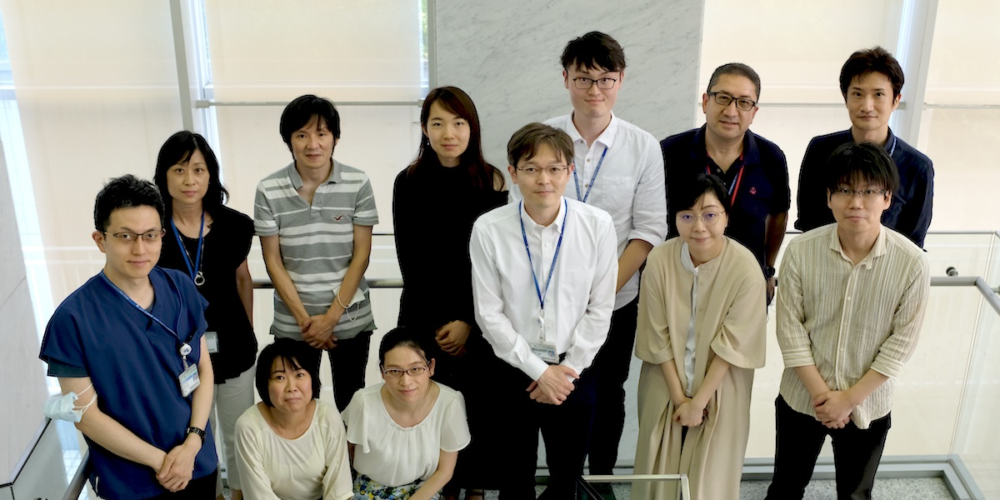

Team
 プロジェクトリーダー
> 丸山 玲緒
研究員
> 中太 智義 > 鈴鹿 淳 > 馬合木特 亜森
客員研究員(学振PD)
> 前澤 誠希
クリニカルリサーチフェロー
> 尾辻 和尊 > 粂川 昂平
研究生・大学院生・研修生
> 佐伯 澄人 > 松野 達哉 > 井上 双葉 > 﨑本 優里 > 豊原 佑典 > 高橋 洋子 > 堀 千紗
研究助手
> 楊 麗英 > 山川 薫 > 宮木 理帆
研究補助員
> 上田 美祐 > 大塚 裕美
丸山 玲緒
Reo MARUYAMA
プロジェクトリーダー | がん研究所/がんエピゲノムプロジェクト
副プログラムディレクター | NEXT-Gankenプログラム
プロジェクトリーダー | NEXT-Gankenプログラム/がん細胞多様性解明プロジェクト
プロジェクトリーダー | NEXT-Gankenプログラム/コア解析基盤プロジェクト
分子生物学・腫瘍生物学・バイオインフォマティクス
札幌医科大学医学部卒（2002年）、同大学院医学研究科修了（2007年）。米国 Dana-Farber Cancer Institute - Kornelia Polyak研究室にて乳がんのエピジェネティクス解析に従事。2011年より札幌医科大学医学部・分子生物学講座・助教。2012年からJSTさきがけ研究者兼任。2014年より同准教授。2016年より1年間総合病院で血液内科・総合診療科医師として勤務後、2017年4月がん研究所がんエピゲノムプロジェクトのプロジェクトリーダーに着任。
(researchmap) (就任時挨拶)

中太 智義
Tomoyoshi NAKADAI
特任研究員 ｜ がんエピゲノムプロジェクト
生化学・分子生物学
千葉大学大学院博士課程卒（2003年）。埼玉医科大学生化学教室助手（2003年-2008年）。米国ロックフェラー大学Robert G Roeder研究室ポストドクター及びリサーチアソシエイト（2008年-2018年）。継続して転写制御の分子メカニズムを生化学的及び分子生物学的手法を用いて研究。2018年2月より、がん研究所がんエピゲノムプロジェクトの研究員に赴任。転写制御の側面からがん化の分子機構を明らかにしたいと日々奮闘中。

楊 麗英
Liying YANG
特任研究助手 | がんエピゲノムプロジェクト
分子生物学（各種シングルセル・NGS実験）
復旦大学看護学部卒。2006年来日、2014年京都大学大学院医学研究科修了。2017年8月より現職。新しい知識を勉強しながら、今まで身につけた技術、知識、経験を生かして研究をサポートし、努力していきたいと思っております。

前澤 誠希
Masaki MAEZAWA
客員研究員（東京大学・PD） | がんエピゲノムプロジェクト
産業動物臨床学・分子生物学（①シングルセルChIP-seq法の確立、②牛リンパ腫の各種エピゲノム解析）
佐伯 澄人
Sumito SAEKI
研究生（東北大学連携大学院・大学院生） | がんエピゲノムプロジェクト
乳腺外科（①臨床検体や患者由来オルガノイドを用いた研究、②多種臨床情報に基づく転移・再発乳がん症例の層別化、③医療経済学）
松野 達哉
Tatsuya MATSUNO
研究生（東京大学・大学院生） | がんエピゲノムプロジェクト
消化器内科・分子生物学（①HBVウイルスのゲノム組込み部位の検出法開発、②肝がんのゲノム解析、③Lineage Tracing手法の開発。WET&DRYを実践）
井上 双葉
Futaba INOUE
研究生（東京大学・大学院生） | がんエピゲノムプロジェクト
産婦人科（ヒストン修飾酵素の機能解析、各種エピゲノム解析）
﨑本 優里
Yuuri SAKIMOTO
研究生（慶應義塾大学） | がんエピゲノムプロジェクト
消化器外科（直腸がんのシングルセル解析）
豊原 佑典
Yusuke TOYOHARA
研究生（東京大学・大学院生） | がんエピゲノムプロジェクト
産婦人科（ヒストン修飾酵素阻害剤の機能解析）
堀 千紗
Chisa HORI
研修生 | がんエピゲノムプロジェクト
病理医（乳がんのゲノム解析）
上田 美祐
Miyu UEDA
特任研究補助員 | がんエピゲノムプロジェクト
各種実験の補助、ラボマネージメント
東京大学大学院生。がんの研究は初心者ですが，一生懸命頑張ります。

大塚 裕美
Hiromi OTSUKA
特任研究補助員 | がんエピゲノムプロジェクト
各種実験の補助、ラボマネージメント
研究が少しでもスムーズに進むよう，サポートしたします！

鈴鹿 淳
Jun SUZUKA
特任研究員 | がん細胞多様性解明プロジェクト
腫瘍生物学（ハイドロゲルを用いた幹細胞性・細胞可塑性の研究）

尾辻 和尊
kazutaka OTSUJI
クリニカルリサーチフェロー | がん細胞多様性解明プロジェクト
乳腺外科（シングルセルマルチオミックス解析手法の開発・解析）

粂川 昂平
Kohei KUMEGAWA
クリニカルリサーチフェロー | がん細胞多様性解明プロジェクト
バイオインフォマティクス
2016年札幌医科大学卒業。初期研修，内科研修を経て2020年より丸山研究室へ参加。東北大学大学院医学系研究科在籍中。scATACseq解析を中心に，scRNAseq, scChIPseq解析，公共データベースとの統合解析等に従事。医師としての視点を持ったバイオインフォマティシャン，データサイエンティストを志向して日々勉強中です。
馬合木特 亜森
Mahmut YASEN
特任研究員 | コア解析基盤プロジェクト
乳がん患者由来オルガノイドの解析（イメージング）

山川 薫
kaoru YAMAKAWA
特任研究助手 | コア解析基盤プロジェクト
分子生物学（乳がん臨床検体・患者由来オルガノイド）
宮木 理帆
Riho MIYAKI
特任研究助手 | コア解析基盤プロジェクト
バイオインフォマティクス（各種一次解析）

高橋 洋子
Yoko TAKAHASHI
研究生（がん研究会有明病院・乳腺外科・副医長） | コア解析基盤プロジェクト
乳腺外科（臨床検体、臨床情報の解析）